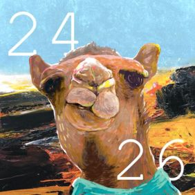

-PLAY LIST-
교재를 펼쳐봐
이승윤
타인의 아픔을 함부로 수단삼아 교훈을 말하는 이들에 관한 곡.
그런데 쓰다보니 노래를 짓는다는 것 또한.
결국 나도 별 다를 것 없다는 생각이 들었습니다.
이전에 발매한 영웅 수집가라는 곡과 쌍둥이 곡이며 같은 이야기를 다른 시선으로 만든 곡입니다.
놓아줘
CRUSH
스무드한 R&B/Soul 기반의 곡.
쓸쓸한 피아노 선율 위 따뜻한 기타 연주.
연과 크러쉬의 하모니가 돋보인다.
이별이 다가왔음을 느끼는 두 남녀의 목소리.

Aqua Man
빈지노
어항 속에 갇힌 고기들보다.
I wanna be your boy friend
not one of your
생선.
너의 어장은 너무 캄캄해
헤엄 헤엄 헤엄
손에 꼽을 정도로 아주 가끔씩